不要顺着系统候选框标。先看原图判断字段值在哪里，再看候选框。
候选框是被评测的对象，不是参考答案。若某字段肉眼不可见，标 field_visible=false
并写 unlocatable_reason，不要勉强画一个框。
图例：exact_label_rightalias_label_righttable_value_cellstructural_row_inferencetable_or_title_blockfull_page_diagnostic OCR 块 表格单元格
填写方法见 docs/review_region_annotation_guide.md。
填完请编辑 data/review_region_gold_unreviewed.jsonl，
然后运行 python scripts/validate_review_region_gold.py。
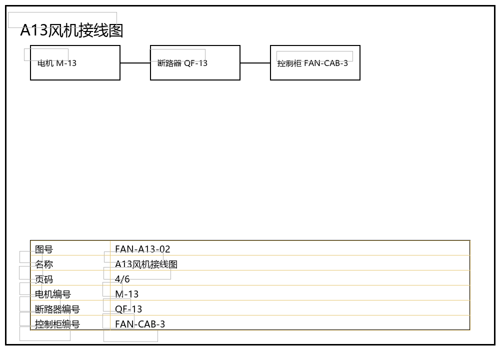
| # | strategy | trust | 字段 | bbox | 面积 | 定位不确定 | 可自动答 | 锚点 |
|---|---|---|---|---|---|---|---|---|
| 无候选 | ||||||||
| 字段 | 触发原因 | 人工填写 | |||
|---|---|---|---|---|---|
| 本页无待审字段 | |||||
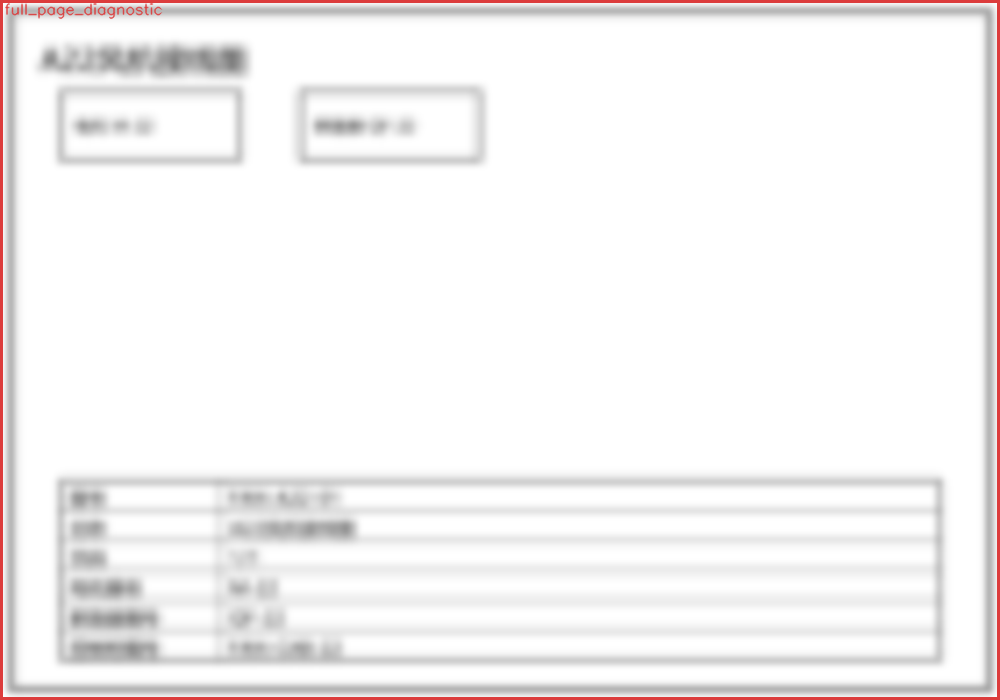
| # | strategy | trust | 字段 | bbox | 面积 | 定位不确定 | 可自动答 | 锚点 |
|---|---|---|---|---|---|---|---|---|
| 0 | full_page_diagnostic | diagnostic | * | [0, 0, 1000, 700] | 100.0% | 是 | 否 | whole page |
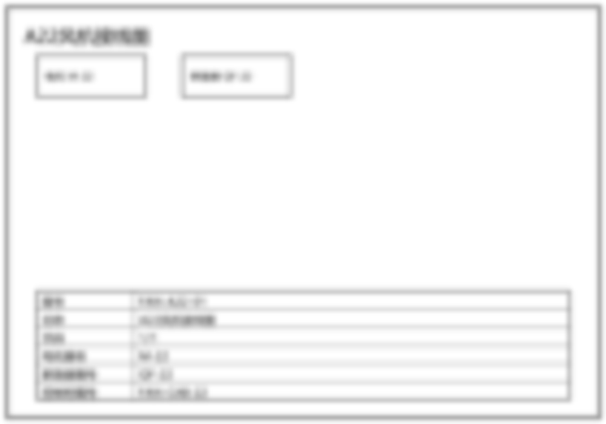
| 字段 | 触发原因 | 人工填写 | |||
|---|---|---|---|---|---|
| 本页无待审字段 | |||||
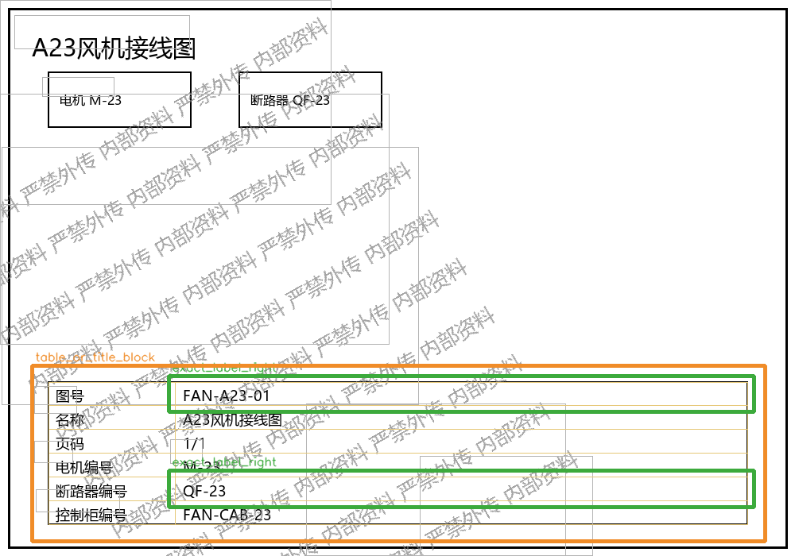
| # | strategy | trust | 字段 | bbox | 面积 | 定位不确定 | 可自动答 | 锚点 |
|---|---|---|---|---|---|---|---|---|
| 0 | exact_label_right | precise | 图号 | [212, 473, 948, 518] | 4.7% | 否 | 是 | label:图号 |
| 1 | exact_label_right | precise | 断路器编号 | [212, 592, 948, 638] | 4.8% | 否 | 是 | label:断路器编号 |
| 2 | table_or_title_block | contextual | 名称, 控制柜编号, 电机编号 | [40, 460, 962, 681] | 29.3% | 是 | 否 | table:T0:3d527d661ae44ba4 |
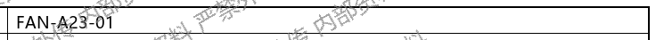
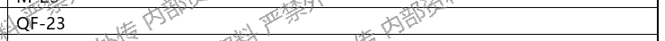
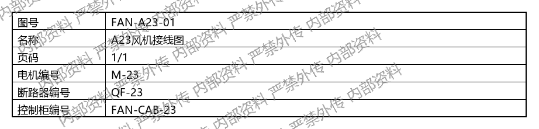
| 字段 | 触发原因 | 人工填写 | |||
|---|---|---|---|---|---|
| 名称 | required_field_missing | gold_bbox = ____________ | region_type = ____________ | field_visible = ___ | value_visible = ___ |
| 图号 | required_field_missing, isolated_label_without_value | gold_bbox = ____________ | region_type = ____________ | field_visible = ___ | value_visible = ___ |
| 控制柜编号 | required_field_missing | gold_bbox = ____________ | region_type = ____________ | field_visible = ___ | value_visible = ___ |
| 断路器编号 | required_field_missing, isolated_label_without_value | gold_bbox = ____________ | region_type = ____________ | field_visible = ___ | value_visible = ___ |
| 电机编号 | required_field_missing | gold_bbox = ____________ | region_type = ____________ | field_visible = ___ | value_visible = ___ |
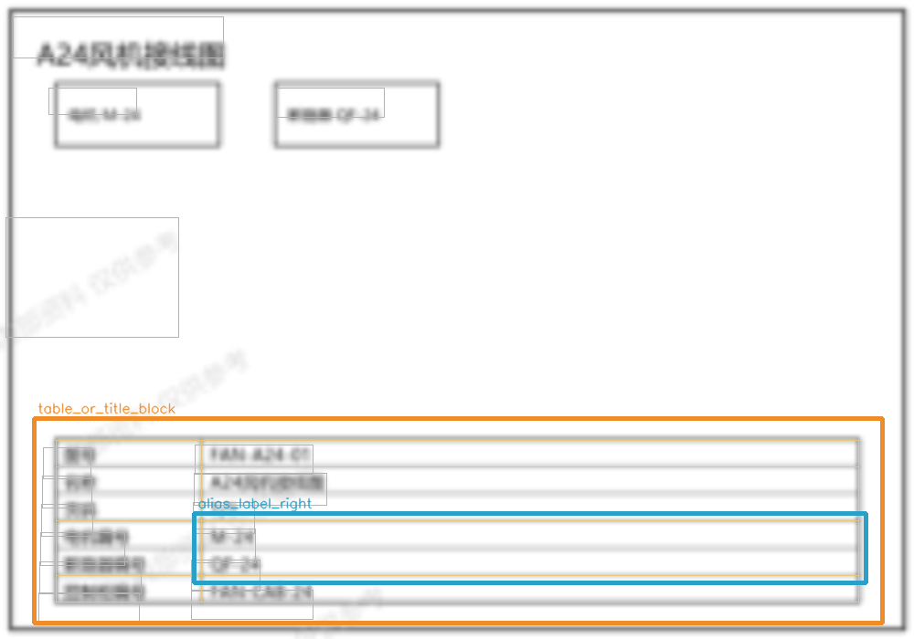
| # | strategy | trust | 字段 | bbox | 面积 | 定位不确定 | 可自动答 | 锚点 |
|---|---|---|---|---|---|---|---|---|
| 0 | alias_label_right | structural | 电机编号 | [212, 562, 947, 638] | 8.0% | 是 | 否 | alias:电r编号 |
| 1 | table_or_title_block | contextual | 名称, 图号, 控制柜编号, 断路器编号, 页码|版本 | [37, 458, 965, 682] | 29.6% | 是 | 否 | table:T0:48b59e1067ee8fab |
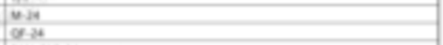
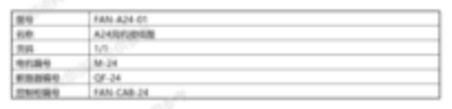
| 字段 | 触发原因 | 人工填写 | |||
|---|---|---|---|---|---|
| 名称 | required_field_missing | gold_bbox = ____________ | region_type = ____________ | field_visible = ___ | value_visible = ___ |
| 图号 | required_field_missing | gold_bbox = ____________ | region_type = ____________ | field_visible = ___ | value_visible = ___ |
| 控制柜编号 | required_field_missing | gold_bbox = ____________ | region_type = ____________ | field_visible = ___ | value_visible = ___ |
| 断路器编号 | required_field_missing | gold_bbox = ____________ | region_type = ____________ | field_visible = ___ | value_visible = ___ |
| 电机编号 | required_field_missing | gold_bbox = ____________ | region_type = ____________ | field_visible = ___ | value_visible = ___ |
| 页码|版本 | required_field_missing | gold_bbox = ____________ | region_type = ____________ | field_visible = ___ | value_visible = ___ |
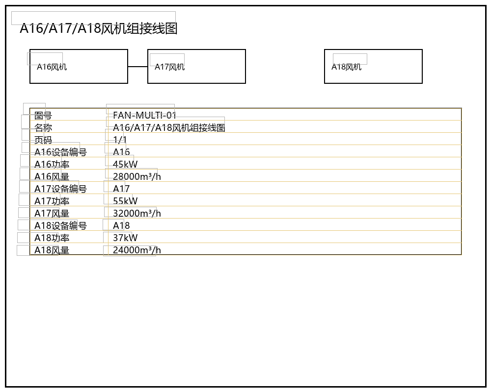
| # | strategy | trust | 字段 | bbox | 面积 | 定位不确定 | 可自动答 | 锚点 |
|---|---|---|---|---|---|---|---|---|
| 无候选 | ||||||||
| 字段 | 触发原因 | 人工填写 | |||
|---|---|---|---|---|---|
| 本页无待审字段 | |||||